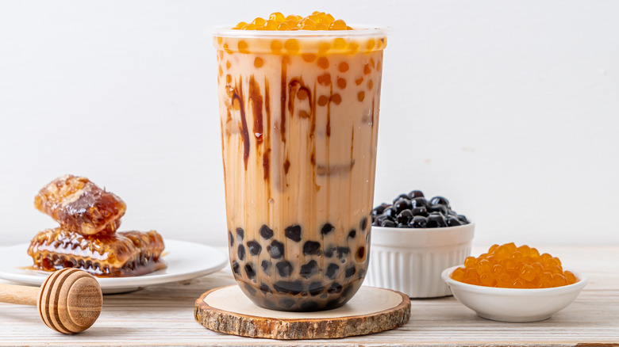

Pengaruh Viskositas Pati Singkong Terhadap Tekstur Boba


Kualitas tekstur boba pearls merupakan atribut krusial yang menentukan daya terima produk oleh konsumen. Pati singkong, sebagai bahan baku esensial, memiliki sifat fungsional, khususnya viskositas, yang sangat memengaruhi karakteristik chewiness dan elastisitas boba. Profil viskositas pati, yang diukur selama proses gelatinisasi, secara langsung berkorelasi dengan pembentukan matriks gel boba yang optimal. Penelitian ini berfokus untuk menetapkan rentang parameter viskositas pati singkong yang menghasilkan kualitas tekstur boba superior guna memaksimalkan penerimaan pasar.
🐻☕🧸📋🧋🍪
we appriciate your advice ^^